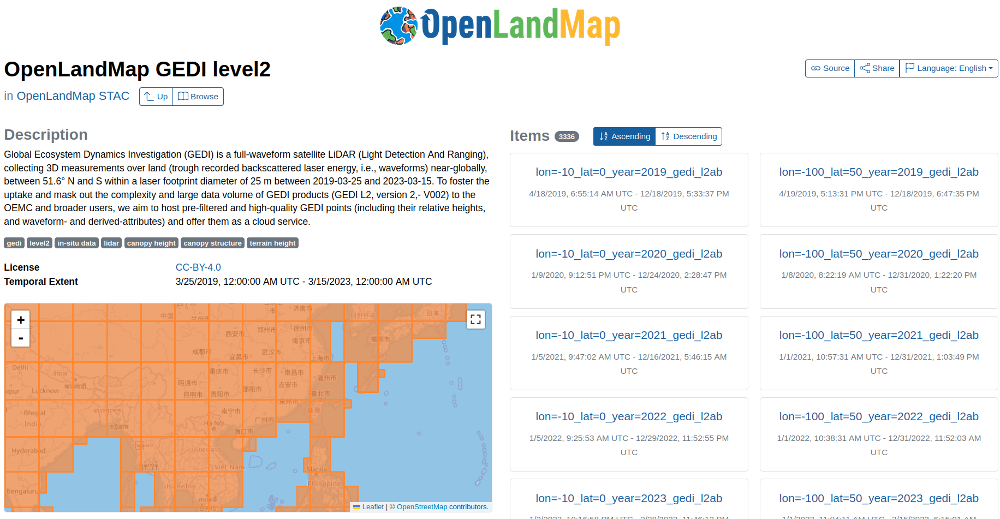

OpenLandMap GEDI Official Documentation
General Description
Global Ecosystem Dynamics Investigation (GEDI) is a full-waveform satellite LiDAR (Light Detection And Ranging), collecting 3D measurements over land (trough recorded backscattered laser energy, i.e., waveforms) near-globally, between 51.6° N and S within a laser footprint diameter of 25 m between 2019-03-25 onward. To foster the uptake and mask out the complexity and large data volume of GEDI products (GEDI L2, version 2,- V002) to the OEMC and broader users, we aim to host pre-filtered and high-quality GEDI points (including their relTechnical Documentationative heights, and waveform- and derived-attributes) and offer them as a cloud service.
The data is organized in Parquet Dataset and the visualization of data is in OpenLandMap STAC, 3336 partitions in 5 degree by 5 degree by year (Fig. 1).

Technical Specification
(Geo)Parquet
Apache Parquet is an open source column-oriented data format designed for efficient data storage and retrieval. Parquet has two features among other cloud-native formats (e.g. flatgeobuf, PMTiles) . Firstly, it provides data compression that increases I/O approximately 10 times than other formats like flatgeobuf, geopackage, and shapefile (Chris Holmes et al., 2023). Secondly, it supports file partition. Apache Parquet allows writing rows in a partition, grouped by one to multiple columns. Furthermore, if the writing follows the same partition structure, it can keep appending to a single parquet dataset.
Data Pre-filtering and fusion
In the pre-filtering, we excluded low-quality GEDI points, i.e., GEDI shots with Quality Flag equal to 0, Degradation Flag larger than 0, or Sensitivity smaller than 0.95.
In the fusion, we selected attributes from L2A and L2B products respectively and joined them into a single product l2.v002.gedi. Those selected attributes are listed at the table: Column Information of OpenLandMap GEDI Level 2
The processes are committed and pushed to OpenLanMap GitHub (https://github.com/openlandmap/spatial-layers/tree/main/input_layers/GEDI_L2A). If you discover a bug, artifact, or inconsistency, or if you have a question please through the following channel.
raise an issue at https://github.com/openlandmap/spatial-layers/issues
directly contact through my email: yu-feng.ho@opengeohub.org
Tutorial
- Heisig, Johannes; Ho, Yu-feng: Accessing Big Vector Data on the Cloud using Arrow Parquet. GEO-OPEN-HACK – 2024, OpenGeoHub Foundation, 2024. https://doi.org/10.5446/69559
- Access OpenLandMap GEDI dataset via OpenEO: Stream GEDI Data into a Cloud-Processing Workflow.